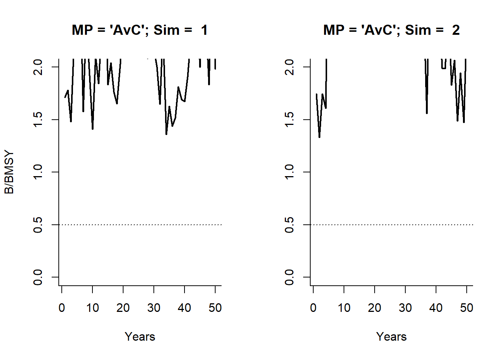
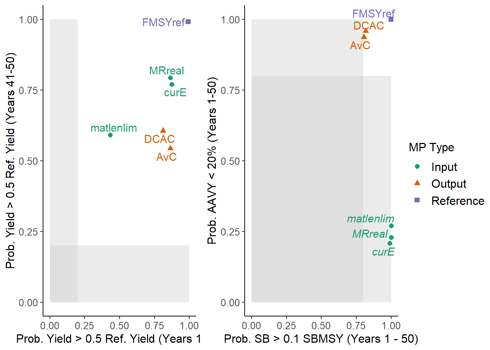
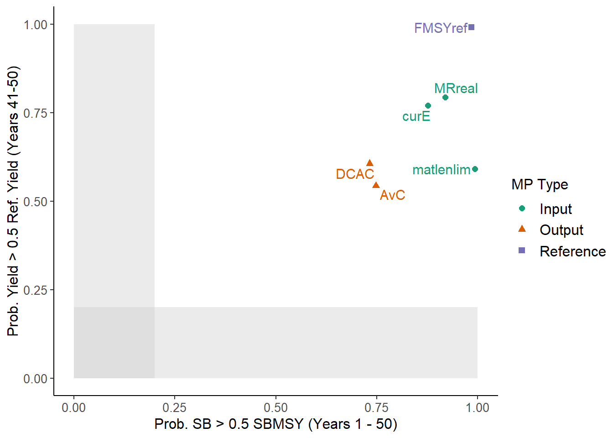
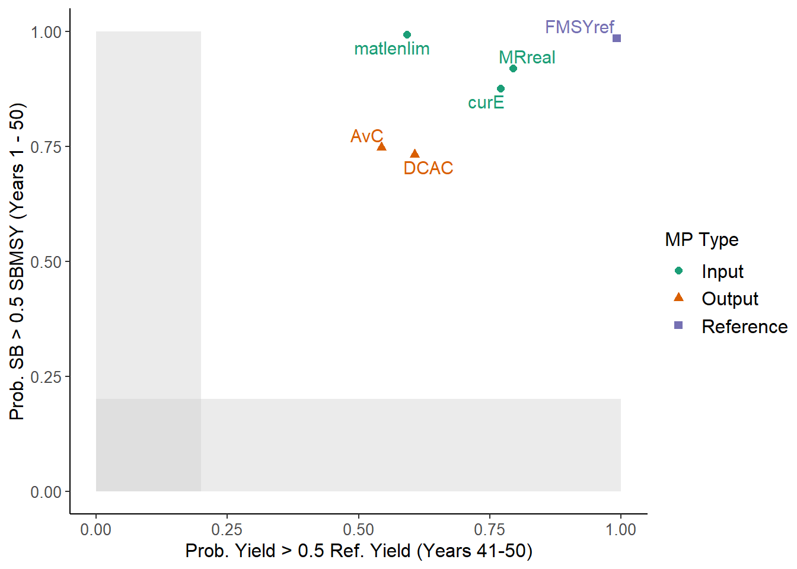
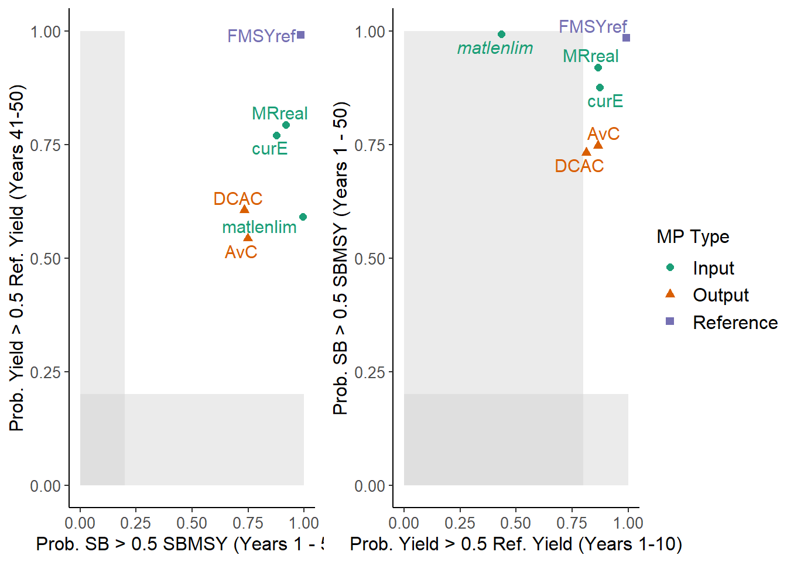
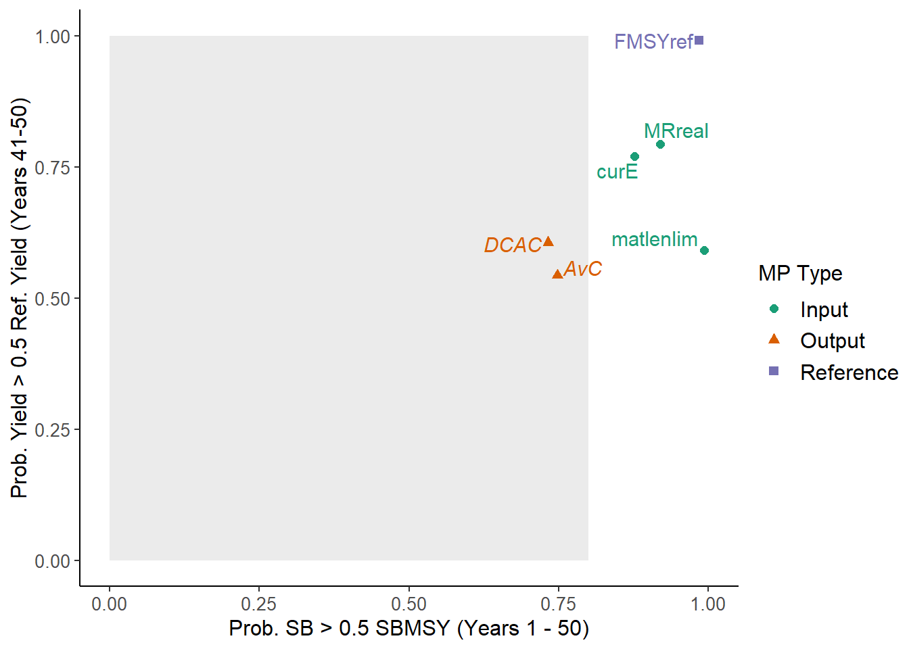
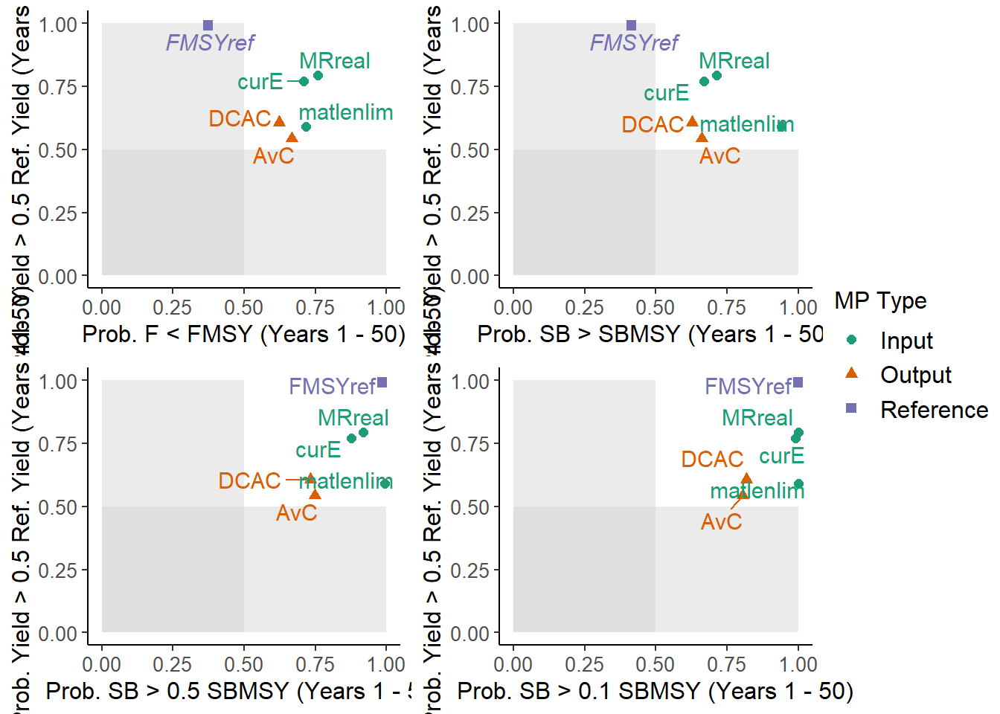
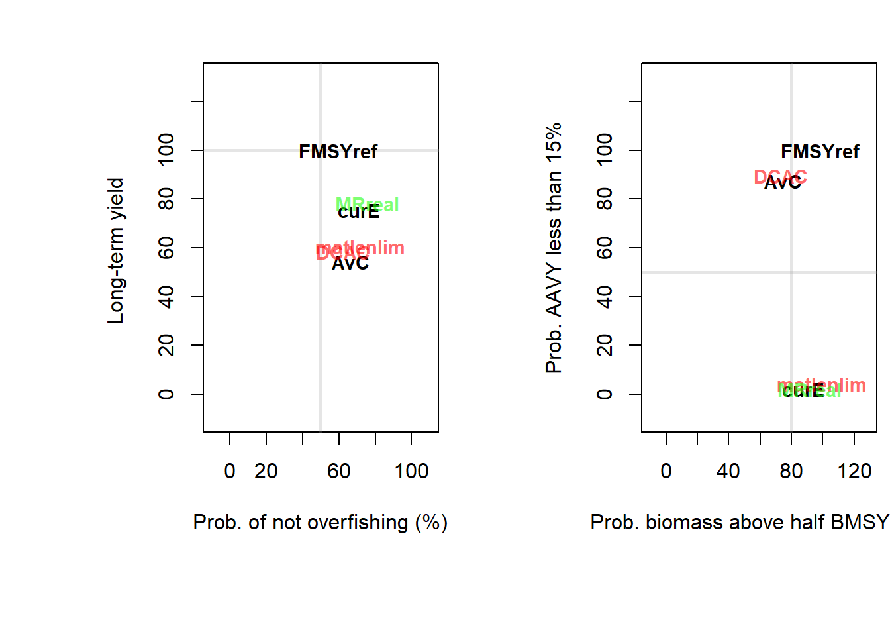
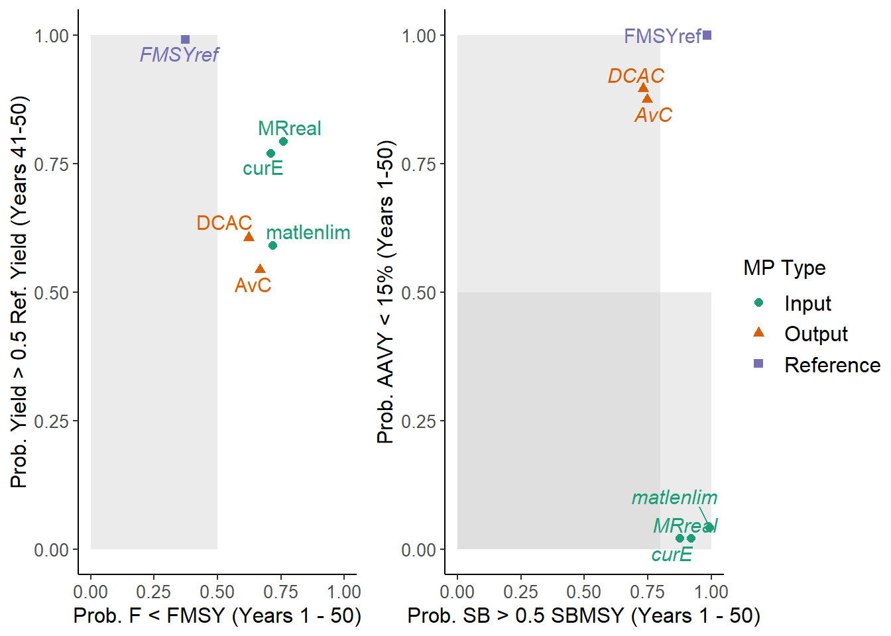

Chapter 15 Performance Metrics
A key use of the DLMtool is to evaluate the trade-offs in the performance of different potential Management Procedures and to assist in the decision-making process as to which Management Procedure is most likely to satisfy the various management objectives under realistic range of uncertainty and variability in the system.
15.1 The Need for Performance Metrics
In order to evaluate the relative effectiveness of different Management Procedures, it is important that decision-makers have clearly-defined management objectives. These management objectives can be incorporated into the MSE process in the form of performance metrics, which provide the yardstick with which to compare the relative performance of different management strategies.
Fisheries managers are confronted with the difficult task of maximizing yield and ensuring the sustainability of the resource and the overall health of the marine environment. The principal objectives of fisheries management could be described as ensuring sustainable harvests and viable fishing communities, while maintaining healthy ecosystems. However, this simplistic view overlooks the fact that there are often conflicts in different management objectives and that there is rarely an optimal management approach that fully satisfies all management objectives (Punt, 2015). Walters and Martell (2004) explain that the task of modern fisheries management is to identify the various trade-offs among conflicting objectives and decide how to balance them in a satisfactory way.
15.2 Inevitable Trade-Offs
A typical trade-off is the abundance of the target species versus the catch. Assuming no significant system-wide natural perturbations, a fish stock may be exploited sustainability if catches are set at low levels. However, such economic under-utilization of the resource is often seen as undesirable. Alternatively, high catches may produce immediate short-term benefits, but may result in long-term degradation, or perhaps collapse, of the stock.
Additionally, there is often a trade-off between stock size and fishing effort, which results in lower catch rates (and lower profit) for individual fishers when a large number of fishers are active in the fishery (Walters and Martell, 2004). Other common trade-offs include the age and size at first capture, either delaying harvest until individuals are fewer in number (due to natural mortality) but larger in size, or capturing a large number of small sized fish (Punt, 2015).
When multiple objectives are considered, there is usually not a single optimum solution, and fisheries managers are faced with the difficult task of determining the most appropriate management action that satisfies the numerous management objectives and stakeholder interests (Punt, 2015).
15.2.1 Operational Management Objectives
A key strength of the MSE approach is that decision-makers are required to specify clear objectives, which can be classified as either “conceptual” or “operational” (Punt et al., 2014). Conceptual objectives are typically high-level policy goals that may be broadly defined.
However, in order to be included in an MSE, conceptual objectives must be translated into operational objectives (i.e., expressed as values for performance metrics). Such operational objectives, or performance metrics, may consist of both a reference point (e.g., biomass some fraction of equilibrium unfished level) as well as a measure of the acceptable associated risk (e.g., less than 10% chance that biomass declines below this reference level).
It is not unusual that some of the management objectives are in conflict. A key benefit of the MSE approach is to highlight these trade-offs among the different management objectives to guide the decision-making process. However, in order for these trade-offs to be quantified, it is critically important that the performance metrics are quantifiable and thus able to be incorporated into the MSE framework (Punt, 2015).
15.3 Commonly used Performance Metrics
Management strategy evaluation is a simulation exercise where the model can track the specific performance with perfect information, so it is possible to state performance objectives in specific terms that are consistent with the typical objectives of fisheries policies, such as:
- Biomass relative to unfished biomass \(\left(B_0\right)\) or biomass at maximum sustainable yield \(\left(B_{MSY}\right)\).
- Fishing mortality rate relative to fishing at maximum sustainable yield \(\left(F_{MSY}\right)\).
- Yield (short-term or long-term) of a particular management strategy relative to the yield if the fishery were being exploited at \(F_{MSY}\).
- Inter-annual variability in yield or effort (e.g., fluctuations in yield from year to year).
Because the management strategy evaluation runs many simulations of the fisheries performance under each management strategy being tested, the performance can be stated probabilistically, such as the specific probability of biomass being above or below a specific biomass threshold or target.
15.3.1 Fishing Mortality
For example, the management strategies can be ranked by the likelihood of overfishing to occur, where the probability of overfishing is measured by the proportion of simulation runs where the fishing mortality rate (F) under a specific management strategy is higher than the F that is expected to produce the maximum sustainable yield.
Management strategies that have a lower probability of overfishing occurring are typically preferable to those that frequently cause excessive fishing mortality rates. If there are 1,000 simulation runs for each management strategy over a 50-year projection period, then the probability of overfishing could be based on the proportion where F is greater than (or less than) \(F_{MSY}\) over all years or any subset of years (e.g., probability of overfishing in years 41-50 of the 50-year projection period).
15.3.2 Stock Biomass
Another common performance metric is the probability that the stock biomass is above or below some biological reference point. For example, a minimum performance limit may be half the biomass at maximum sustainable yield (0.5 BMSY), and the performance of the management strategies can be ranked by the probability of the stock remaining above this level.
Management strategies that fail to maintain biomass above this limit with a high priority may be considered too risky and therefore excluded from further examination.
15.3.3 Additional Performance Metrics
There may be other performance metrics that are of interest to fishery managers and stakeholders. Stakeholder participation is critical when developing performance metrics to evaluate different biological scenarios or management strategies in a MSE. Furthermore, it is important that the performance metrics, together with any acceptable risk thresholds are identified and agreed upon before the MSE is conducted.
15.4 Performance Metrics Methods
DLMtool includes a set of functions, of class PM, for calculating Performance Metrics. The available PM functions (referred to as PMs) can be found using the avail function:
avail("PM")## [1] "AAVY" "LTY" "P10" "P100" "P50" "PNOF" "STY" "Yield"The PMs are used for summarizing the performance of the management procedures and plotting the results in trade-off plots.
Here we briefly describe the built-in Performance Metrics functions and demonstrate their use. Advanced DLMtool users can develop their own PM methods, see the Custom Performance Metrics chapter for details.
Functions of class PM are used on an object of class MSE (i.e the object returned by runMSE), and return an object of class PMobj. Most of the time the PM functions are used internally in the summary or plotting functions, and it will not be neccessary to acess the PMobj directly.
To demonstrate the PM functions we first run a quick example MSE:
MSE <- runMSE()15.4.1 Overview of the PM Functions
We will use the P50 function to demonstrate the PM methods. Help documentation on the PM methods can be accessed in the usual way: ?P50.
The P50 PM method calculates the probability that spawning biomass is above half of the spawning biomass that results in maximum sustainable yield \(\left(\text{SB} > 0.5\text{SB}_\text{MSY}\right)\).
Applying the P50 function to our MSE object results in the following output:
P50(MSE)## Spawning Biomass relative to SBMSY
## Prob. SB > 0.5 SBMSY (Years 1 - 50)
## AvC DCAC FMSYref curE matlenlim MRreal
## 1 1 1 1 1 1 1
## 2 1 0.88 1 1 1 1
## 3 0.04 0.06 0.96 0.24 1 0.78
## 4 1 0.9 0.96 1 1 1
## 5 1 0.98 1 1 1 1
## 6 1 1 1 1 1 1
## 7 1 0.54 1 1 1 1
## 8 0.38 0.36 1 1 1 1
## 9 0.42 0.58 1 0.42 1 0.6
## 10 1 1 1 0.96 1 1
## 11 . . . . . .
## 12 . . . . . .
## 13 . . . . . .
## 48 0.44 0.42 0.96 1 1 1
##
## Mean
## [1] 0.75 0.73 0.98 0.88 0.99 0.92We can see that the PM function calculated, for the 6 MPs in the MSE object, the probability \(\text{SB} > 0.5\text{SB}_\text{MSY}\) for all 50 projection years.
The PM function prints out a summary table of the performance metrics statistics for the first 10 simulations and the last simulation (48 in this case) for each MP. The final line shows the overall probability of the performance metric, i.e the average performance across all simulations.
We will look into this output in a little more detail.
We can see that the first MP is AvC and the performance statistics for the first and second simulations are 1 and 1. How have these values been calculated and what do they mean?
Let’s first plot the spawning biomass relative to BMSY for the first two simulations of the AvC MP:
par(mfrow=c(1,2))
plot(1:MSE@proyears, MSE@B_BMSY[1,1,], type='l',
xlab="Years", ylab="B/BMSY", lwd=2, bty="l", ylim=c(0,2),
main="MP = 'AvC'; Sim = 1")
abline(h=0.5, lty=3)
plot(1:MSE@proyears, MSE@B_BMSY[2,1,], type='l',
xlab="Years", ylab='', lwd=2, bty="l", ylim=c(0,2),
main="MP = 'AvC'; Sim = 2")
abline(h=0.5, lty=3)
Now we will calculate fraction of years where spawning biomass is above 0.5 \(\text{SB}_\text{MSY}\) for the first and second simulations:
mean(MSE@B_BMSY[1,1,] > 0.5) # first simulation## [1] 1mean(MSE@B_BMSY[2,1,] > 0.5) # second simulation## [1] 1# identical to:
# sum(MSE@B_BMSY[1,1,] > 0.5)/MSE@proyears
# sum(MSE@B_BMSY[2,1,] > 0.5)/MSE@proyearsNotice how the performance statistics for each simulation correspond with the plot shown above?
The overall performance is then calculated by the probability over all simulations, i.e for the first MP AvC:
mean(MSE@B_BMSY[,1,]>0.5)## [1] 0.7475And for 6 MPs:
round(apply(MSE@B_BMSY >0.5, 2, mean),2)## [1] 0.75 0.73 0.98 0.88 0.99 0.92which, reassuringly, is the same as the output of the P50 function.
15.4.2 Customizing the PM Functions
The PM functions allow for very quick calculation of performance metrics. For example, suppose that instead of calculating performance over all projection years, we are only interested in the long-term performance, say over the last 10 years. This can be easily achieved using the Yrs argument in the PM function:
P50(MSE, Yrs=c(41,50))## Spawning Biomass relative to SBMSY
## Prob. SB > 0.5 SBMSY (Years 41 - 50)
## AvC DCAC FMSYref curE matlenlim MRreal
## 1 1 1 1 1 1 1
## 2 1 0.4 1 1 1 1
## 3 0 0 1 0 1 0.8
## 4 1 0.5 0.9 1 1 1
## 5 1 0.9 1 1 1 1
## 6 1 1 1 1 1 1
## 7 1 0 1 1 1 1
## 8 0 0 1 1 1 1
## 9 0 0 1 0 1 0.2
## 10 1 1 1 0.9 1 1
## 11 . . . . . .
## 12 . . . . . .
## 13 . . . . . .
## 48 0 0 1 1 1 1
##
## Mean
## [1] 0.66 0.48 0.98 0.82 0.99 0.88Or the first 10 years:
P50(MSE, Yrs=c(1,10))## Spawning Biomass relative to SBMSY
## Prob. SB > 0.5 SBMSY (Years 1 - 10)
## AvC DCAC FMSYref curE matlenlim MRreal
## 1 1 1 1 1 1 1
## 2 1 1 1 1 1 1
## 3 0.2 0.3 0.8 0.3 1 0.7
## 4 1 1 1 1 1 1
## 5 1 1 1 1 1 1
## 6 1 1 1 1 1 1
## 7 1 1 1 1 1 1
## 8 1 1 1 1 1 1
## 9 1 1 1 1 1 1
## 10 1 1 1 1 1 1
## 11 . . . . . .
## 12 . . . . . .
## 13 . . . . . .
## 48 1 1 1 1 1 1
##
## Mean
## [1] 0.91 0.95 0.98 0.91 0.99 0.95The other biomass Performance Metric functions work in the same way:
P10(MSE) # probability SB > 0.1SB_MSY for all years## Spawning Biomass relative to SBMSY
## Prob. SB > 0.1 SBMSY (Years 1 - 50)
## AvC DCAC FMSYref curE matlenlim MRreal
## 1 1 1 1 1 1 1
## 2 1 1 1 1 1 1
## 3 0.22 0.34 1 1 1 1
## 4 1 0.98 1 1 1 1
## 5 1 1 1 1 1 1
## 6 1 1 1 1 1 1
## 7 1 0.64 1 1 1 1
## 8 0.58 0.52 1 1 1 1
## 9 0.58 0.72 1 1 1 1
## 10 1 1 1 1 1 1
## 11 . . . . . .
## 12 . . . . . .
## 13 . . . . . .
## 48 0.56 0.5 1 1 1 1
##
## Mean
## [1] 0.81 0.82 1.00 0.99 1.00 1.00P100(MSE) # probability SB > SB_MSY for all years## Spawning Biomass relative to SBMSY
## Prob. SB > SBMSY (Years 1 - 50)
## AvC DCAC FMSYref curE matlenlim MRreal
## 1 1 0.88 0.5 1 1 1
## 2 1 0.8 0.5 1 1 1
## 3 0 0 0.4 0 0.94 0
## 4 1 0.82 0.42 0.86 1 0.86
## 5 0.84 0.78 0.6 0.86 0.9 0.88
## 6 1 1 0.42 1 1 1
## 7 0.96 0.4 0.36 1 1 1
## 8 0.22 0.24 0.74 0.98 1 1
## 9 0 0.38 0.34 0 0.96 0
## 10 0.96 0.98 0.66 0.16 0.7 0.34
## 11 . . . . . .
## 12 . . . . . .
## 13 . . . . . .
## 48 0.26 0.28 0.44 0.9 0.96 0.92
##
## Mean
## [1] 0.66 0.63 0.41 0.67 0.94 0.71Long-term, short-term and overall average yield are calculated using LTY, STY and Yield respectively:
LTY(MSE)## Average Yield relative to Reference Yield (Years 41-50)
## Prob. Yield > 0.5 Ref. Yield (Years 41-50)
## AvC DCAC FMSYref curE matlenlim MRreal
## 1 1 1 1 1 0.5 1
## 2 1 1 1 0.2 0 0.2
## 3 0 0 1 0.9 0.7 1
## 4 1 1 1 1 0.2 1
## 5 1 1 1 1 1 1
## 6 0 1 1 1 0.9 1
## 7 1 0 1 0.8 0 0.8
## 8 0 0 1 1 1 1
## 9 0 0 1 1 0.2 1
## 10 1 1 1 1 1 1
## 11 . . . . . .
## 12 . . . . . .
## 13 . . . . . .
## 48 0 0 1 0.8 0.3 0.8
##
## Mean
## [1] 0.54 0.61 0.99 0.77 0.59 0.79STY(MSE)## Average Yield relative to Reference Yield (Years 1-10)
## Prob. Yield > 0.5 Ref. Yield (Years 1-10)
## AvC DCAC FMSYref curE matlenlim MRreal
## 1 1 1 1 0.7 0 0.7
## 2 1 1 1 1 0 1
## 3 1 1 1 1 0 1
## 4 1 1 1 1 0 1
## 5 1 1 1 0.9 0.7 0.8
## 6 0 0 1 1 0.5 1
## 7 1 1 1 1 0 1
## 8 1 1 1 1 0.8 1
## 9 1 1 1 1 0 1
## 10 1 1 1 1 1 1
## 11 . . . . . .
## 12 . . . . . .
## 13 . . . . . .
## 48 1 1 1 1 0.6 1
##
## Mean
## [1] 0.86 0.81 0.99 0.87 0.43 0.86Yield(MSE)## Yield relative to Reference Yield (Years 1-50)
## Mean Relative Yield (Years 1-50)
## AvC DCAC FMSYref curE matlenlim MRreal
## 1 0.68 0.89 1.03 0.79 0.33 0.77
## 2 0.76 0.93 1.1 0.63 0.3 0.62
## 3 0.35 0.47 1.16 1.02 0.55 1
## 4 0.76 1 1.06 1.01 0.4 0.97
## 5 0.97 1.1 1.27 1.15 0.97 1.12
## 6 0.46 0.66 0.88 0.71 0.57 0.68
## 7 0.71 0.56 0.8 0.64 0.12 0.63
## 8 0.73 0.68 1.11 1.04 0.86 1
## 9 0.64 0.76 0.91 0.83 0.38 0.82
## 10 0.98 0.91 1.25 1.25 1.38 1.2
## 11 . . . . . .
## 12 . . . . . .
## 13 . . . . . .
## 48 0.65 0.62 0.98 0.8 0.53 0.77
##
## Mean
## [1] 0.62 0.73 1.02 0.82 0.61 0.81The PNOF PM function calculates the probability of not overfishing:
PNOF(MSE)## Probability of not overfishing (F<FMSY)
## Prob. F < FMSY (Years 1 - 50)
## AvC DCAC FMSYref curE matlenlim MRreal
## 1 1 0.84 0.32 1 1 1
## 2 1 0.8 0.3 1 1 1
## 3 0 0 0.36 0.04 0.08 0.12
## 4 1 0.74 0.36 0.92 0.94 0.96
## 5 0.9 0.8 0.38 0.94 0.92 0.96
## 6 1 1 0.38 1 1 1
## 7 1 0.32 0.48 1 1 1
## 8 0.18 0.2 0.3 0.86 0.88 0.92
## 9 0 0.44 0.44 0.04 0.06 0.08
## 10 1 1 0.36 0.2 0.2 0.32
## 11 . . . . . .
## 12 . . . . . .
## 13 . . . . . .
## 48 0.12 0.3 0.4 0.92 0.94 0.94
##
## Mean
## [1] 0.67 0.62 0.37 0.71 0.72 0.76Finally, the average annual variability in yield (AAVY) can be calculated with the AAVY function:
AAVY(MSE)## Average Annual Variability in Yield (Years 1-50)
## Prob. AAVY < 20% (Years 1-50)
## AvC DCAC FMSYref curE matlenlim MRreal
## 1 1 1 1 0 0 0
## 2 1 1 1 1 1 1
## 3 1 1 1 0 0 0
## 4 1 1 1 1 1 1
## 5 1 1 1 0 0 0
## 6 1 1 1 0 0 0
## 7 1 1 1 0 0 0
## 8 1 1 1 0 0 0
## 9 1 1 1 0 0 0
## 10 1 1 1 0 0 0
## 11 . . . . . .
## 12 . . . . . .
## 13 . . . . . .
## 48 1 1 1 0 0 0
##
## Mean
## [1] 0.94 0.96 1.00 0.21 0.27 0.23By default the AAVY PM function calculates the probability that AAVY is less than 20%. This reference level can easily be modified using the Ref argument:
AAVY(MSE, Ref=0.15) # prob. AAVY < 15%## Average Annual Variability in Yield (Years 1-50)
## Prob. AAVY < 15% (Years 1-50)
## AvC DCAC FMSYref curE matlenlim MRreal
## 1 1 1 1 0 0 0
## 2 1 1 1 0 0 0
## 3 0 1 1 0 0 0
## 4 1 1 1 0 0 0
## 5 1 1 1 0 0 0
## 6 1 1 1 0 0 0
## 7 1 1 1 0 0 0
## 8 1 1 1 0 0 0
## 9 1 1 1 0 0 0
## 10 1 1 1 0 0 0
## 11 . . . . . .
## 12 . . . . . .
## 13 . . . . . .
## 48 1 1 1 0 0 0
##
## Mean
## [1] 0.88 0.90 1.00 0.02 0.04 0.02AAVY(MSE, Ref=0.30) # prob. AAVY < 30%## Average Annual Variability in Yield (Years 1-50)
## Prob. AAVY < 30% (Years 1-50)
## AvC DCAC FMSYref curE matlenlim MRreal
## 1 1 1 1 1 1 1
## 2 1 1 1 1 1 1
## 3 1 1 1 0 0 1
## 4 1 1 1 1 1 1
## 5 1 1 1 0 0 0
## 6 1 1 1 1 1 1
## 7 1 1 1 1 1 1
## 8 1 1 1 0 0 0
## 9 1 1 1 1 1 1
## 10 1 1 1 1 1 1
## 11 . . . . . .
## 12 . . . . . .
## 13 . . . . . .
## 48 1 1 1 1 1 1
##
## Mean
## [1] 1.00 1.00 1.00 0.79 0.79 0.81The other PM functions also have the Ref argument which can be used in the same way. For example, you may notice that the P50 and P100 functions are identical except for the value of the Ref argument:
args(P50)## function (MSEobj = NULL, Ref = 0.5, Yrs = NULL)
## NULLargs(P100)## function (MSEobj = NULL, Ref = 1, Yrs = NULL)
## NULLIt follows then that it is very simple to calculate a custom performance metric based on the built-in PM functions. For example, suppose we wanted to calculate the probability that spawning biomass was above 5% of BMSY. This can be achieved by using any of the biomass-based PM functions and modifying the Ref argument:
P50(MSE, Ref=0.05)## Spawning Biomass relative to SBMSY
## Prob. SB > 0.05 SBMSY (Years 1 - 50)
## AvC DCAC FMSYref curE matlenlim MRreal
## 1 1 1 1 1 1 1
## 2 1 1 1 1 1 1
## 3 0.32 0.4 1 1 1 1
## 4 1 1 1 1 1 1
## 5 1 1 1 1 1 1
## 6 1 1 1 1 1 1
## 7 1 0.68 1 1 1 1
## 8 0.74 0.72 1 1 1 1
## 9 0.62 0.78 1 1 1 1
## 10 1 1 1 1 1 1
## 11 . . . . . .
## 12 . . . . . .
## 13 . . . . . .
## 48 0.64 0.6 1 1 1 1
##
## Mean
## [1] 0.83 0.85 1.00 0.99 1.00 1.00P100(MSE, Ref=0.05)## Spawning Biomass relative to SBMSY
## Prob. SB > 0.05 SBMSY (Years 1 - 50)
## AvC DCAC FMSYref curE matlenlim MRreal
## 1 1 1 1 1 1 1
## 2 1 1 1 1 1 1
## 3 0.32 0.4 1 1 1 1
## 4 1 1 1 1 1 1
## 5 1 1 1 1 1 1
## 6 1 1 1 1 1 1
## 7 1 0.68 1 1 1 1
## 8 0.74 0.72 1 1 1 1
## 9 0.62 0.78 1 1 1 1
## 10 1 1 1 1 1 1
## 11 . . . . . .
## 12 . . . . . .
## 13 . . . . . .
## 48 0.64 0.6 1 1 1 1
##
## Mean
## [1] 0.83 0.85 1.00 0.99 1.00 1.00More information on customizing PM functions can be found in the Custom Performance Metrics chapter.
In the next section we will demonstrate using PM functions in summarizing and plotting functions.
15.5 Summarizing Management Procedure Performance
The Examining the MSE Results chapter introduced the summary function for MSE objects and some of the plotting functions for visualizing the results. Here we demonstrate how the PM functions can be used in the summary function and the trade-off plots:
15.5.1 summary Table
The summary function provides information on the performance of the Management Procedures with respect to the performance metrics. By default, summary includes the PNOF, P50, AAVY and LTY performance metrics:
summary(MSE)## Calculating Performance Metrics## Performance.Metrics
## 1 Probability of not overfishing (F<FMSY) Prob. F < FMSY (Years 1 - 50)
## 2 Spawning Biomass relative to SBMSY Prob. SB > 0.5 SBMSY (Years 1 - 50)
## 3 Average Annual Variability in Yield (Years 1-50) Prob. AAVY < 20% (Years 1-50)
## 4 Average Yield relative to Reference Yield (Years 41-50) Prob. Yield > 0.5 Ref. Yield (Years 41-50)
##
##
## Probability:
## MP PNOF P50 AAVY LTY
## 1 AvC 0.67 0.75 0.94 0.54
## 2 DCAC 0.62 0.73 0.96 0.61
## 3 FMSYref 0.37 0.98 1.00 0.99
## 4 curE 0.71 0.88 0.21 0.77
## 5 matlenlim 0.72 0.99 0.27 0.59
## 6 MRreal 0.76 0.92 0.23 0.79It is straightforward to include other PM functions by adding the names of the PM functions, for example:
summary(MSE, 'P100', 'Yield')## Calculating Performance Metrics## Performance.Metrics
## 1 Spawning Biomass relative to SBMSY Prob. SB > SBMSY (Years 1 - 50)
## 2 Yield relative to Reference Yield (Years 1-50) Mean Relative Yield (Years 1-50)
##
##
## Probability:
## MP P100 Yield
## 1 AvC 0.66 0.62
## 2 DCAC 0.63 0.73
## 3 FMSYref 0.41 1.00
## 4 curE 0.67 0.82
## 5 matlenlim 0.94 0.61
## 6 MRreal 0.71 0.81or all available PM functions:
summary(MSE, avail('PM'))## Calculating Performance Metrics## Performance.Metrics
## 1 Average Annual Variability in Yield (Years 1-50) Prob. AAVY < 20% (Years 1-50)
## 2 Average Yield relative to Reference Yield (Years 41-50) Prob. Yield > 0.5 Ref. Yield (Years 41-50)
## 3 Spawning Biomass relative to SBMSY Prob. SB > 0.1 SBMSY (Years 1 - 50)
## 4 Spawning Biomass relative to SBMSY Prob. SB > SBMSY (Years 1 - 50)
## 5 Spawning Biomass relative to SBMSY Prob. SB > 0.5 SBMSY (Years 1 - 50)
## 6 Probability of not overfishing (F<FMSY) Prob. F < FMSY (Years 1 - 50)
## 7 Average Yield relative to Reference Yield (Years 1-10) Prob. Yield > 0.5 Ref. Yield (Years 1-10)
## 8 Yield relative to Reference Yield (Years 1-50) Mean Relative Yield (Years 1-50)
##
##
## Probability:
## MP AAVY LTY P10 P100 P50 PNOF STY Yield
## 1 AvC 0.94 0.54 0.81 0.66 0.75 0.67 0.86 0.62
## 2 DCAC 0.96 0.61 0.82 0.63 0.73 0.62 0.81 0.73
## 3 FMSYref 1.00 0.99 1.00 0.41 0.98 0.37 0.99 1.00
## 4 curE 0.21 0.77 0.99 0.67 0.88 0.71 0.87 0.82
## 5 matlenlim 0.27 0.59 1.00 0.94 0.99 0.72 0.43 0.61
## 6 MRreal 0.23 0.79 1.00 0.71 0.92 0.76 0.86 0.81The summary function returns a data frame which can be useful for referring to the PM results elsewhere in the analysis. For example,
Results <- summary(MSE, avail('PM'), silent=TRUE) # silent=TRUE to hide print-out to console
Results$Yield # access the PM results## [1] 0.62 0.73 1.00 0.82 0.61 0.8115.5.2 Trade-Off Plots
The TradePlot function takes an object of class MSE and the names of PM functions (at least 2) to produce a trade-off plot. For example:
TradePlot(MSE) # default plot 
## MP STY LTY P10 AAVY Satisificed
## 1 AvC 0.86 0.54 0.81 0.94 TRUE
## 2 DCAC 0.81 0.61 0.82 0.96 TRUE
## 3 FMSYref 0.99 0.99 1.00 1.00 TRUE
## 4 curE 0.87 0.77 0.99 0.21 FALSE
## 5 matlenlim 0.43 0.59 1.00 0.27 FALSE
## 6 MRreal 0.86 0.79 1.00 0.23 FALSEThe order of the PM function names determines plotting on the x and y axes. For example:
TradePlot(MSE, 'P50' ,'LTY') # x = P50, y = LTY
## MP P50 LTY Satisificed
## 1 AvC 0.75 0.54 TRUE
## 2 DCAC 0.73 0.61 TRUE
## 3 FMSYref 0.98 0.99 TRUE
## 4 curE 0.88 0.77 TRUE
## 5 matlenlim 0.99 0.59 TRUE
## 6 MRreal 0.92 0.79 TRUETradePlot(MSE, 'LTY' ,'P50') # x = LTY, y = P50
## MP LTY P50 Satisificed
## 1 AvC 0.54 0.75 TRUE
## 2 DCAC 0.61 0.73 TRUE
## 3 FMSYref 0.99 0.98 TRUE
## 4 curE 0.77 0.88 TRUE
## 5 matlenlim 0.59 0.99 TRUE
## 6 MRreal 0.79 0.92 TRUEThe PMs are recycled if an odd number are provided:
TradePlot(MSE, 'P50' ,'LTY', 'STY') ## Odd number of PMs. Recycling first PM
## MP P50 LTY STY Satisificed
## 1 AvC 0.75 0.54 0.86 TRUE
## 2 DCAC 0.73 0.61 0.81 TRUE
## 3 FMSYref 0.98 0.99 0.99 TRUE
## 4 curE 0.88 0.77 0.87 TRUE
## 5 matlenlim 0.99 0.59 0.43 FALSE
## 6 MRreal 0.92 0.79 0.86 TRUEThe Lims argument is used to set the vertical and horizontal acceptable risk thresholds and are interpreted in the same order as the names of the PM functions. For example:
TradePlot(MSE, 'P50' ,'LTY', Lims=c(0.8, 0)) # 80% minimum acceptable risk for P50, no minimum for LTY
## MP P50 LTY Satisificed
## 1 AvC 0.75 0.54 FALSE
## 2 DCAC 0.73 0.61 FALSE
## 3 FMSYref 0.98 0.99 TRUE
## 4 curE 0.88 0.77 TRUE
## 5 matlenlim 0.99 0.59 TRUE
## 6 MRreal 0.92 0.79 TRUETradePlot(MSE, 'P50' ,'STY', 'P100', 'LTY', Lims=c(0.8, 0, 0.5, 0)) # 80% minimum acceptable risk for P50, 50% for P100, no minimum for STY and LTY
## MP P50 STY P100 LTY Satisificed
## 1 AvC 0.75 0.86 0.66 0.54 FALSE
## 2 DCAC 0.73 0.81 0.63 0.61 FALSE
## 3 FMSYref 0.98 0.99 0.41 0.99 FALSE
## 4 curE 0.88 0.87 0.67 0.77 TRUE
## 5 matlenlim 0.99 0.43 0.94 0.59 TRUE
## 6 MRreal 0.92 0.86 0.71 0.79 TRUEThe TradePlot function returns a data frame with the results of the performance metrics, and a column indicating if an MP has met minimum performance criteria for all performance metrics. In the previous example, 3 MPs (curE, matlenlim, MRreal) met the minimum performance criteria for all four performance metrics.
The TradePlot function can be used to make a variety of custom trade-off plots. For example, the Tplot, Tplot2, and Tplot3 functions all use this function to produce different trade-off plots:
Tplot## function(MSEobj, Lims=c(0.5, 0.5, 0.5, 0.5, 0.5, 0.5, 0.5, 0.5), ...) {
## if (class(Lims)!="numeric") stop("Second argument must be numeric")
## TradePlot(MSEobj, Lims=Lims, PMlist=list("PNOF", "LTY", "P100", "LTY", "P50", "LTY", "P10", "LTY"), ...)
## }
## <bytecode: 0x000000000fc3a4e8>
## <environment: namespace:DLMtool>Tplot(MSE)
## MP PNOF LTY P100 P50 P10 Satisificed
## 1 AvC 0.67 0.54 0.66 0.75 0.81 TRUE
## 2 DCAC 0.62 0.61 0.63 0.73 0.82 TRUE
## 3 FMSYref 0.37 0.99 0.41 0.98 1.00 FALSE
## 4 curE 0.71 0.77 0.67 0.88 0.99 TRUE
## 5 matlenlim 0.72 0.59 0.94 0.99 1.00 TRUE
## 6 MRreal 0.76 0.79 0.71 0.92 1.00 TRUESimilarly, we can easily reproduce NOAA_plot using the Tradeplot function:
NOAA_plot(MSE)## PNOF B50 LTY VY
## AvC 66.7 74.8 54.2 87.5
## DCAC 62.2 73.2 58.3 89.6
## FMSYref 59.8 98.5 100.0 100.0
## curE 70.9 87.6 75.4 2.1
## matlenlim 71.8 99.3 60.4 4.2
## MRreal 75.8 92.0 78.3 2.1TradePlot(MSE, Lims=c(0.5, 0, 0.8, 0.5),
PMlist=list("PNOF", "LTY", "P50", "AAVY"), Refs=list(AAVY=0.15))
## MP PNOF LTY P50 AAVY Satisificed
## 1 AvC 0.67 0.54 0.75 0.880 FALSE
## 2 DCAC 0.62 0.61 0.73 0.900 FALSE
## 3 FMSYref 0.37 0.99 0.98 1.000 FALSE
## 4 curE 0.71 0.77 0.88 0.021 FALSE
## 5 matlenlim 0.72 0.59 0.99 0.042 FALSE
## 6 MRreal 0.76 0.79 0.92 0.021 FALSESee the Plotting MSE Results section for examples on DLMtool plotting functions for the MSE object.
Advanced users may wish to develop their own plotting and summary functions. See the Custom Performance Metrics section for more details on this.